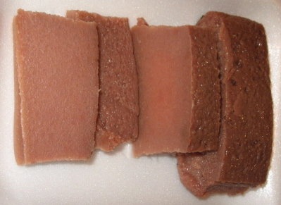

Content Area: Food, Culture, Health and Nutrition
Standard: Analyzing Influences.
- Objective: Explore how our cultural behavior related to food is influenced by a system of beliefs, knowledge and practices shared by a group.
- Objective: Identify influences that guide our food choices.
- Objective: Understand how a visitor unfamiliar with the culture can interpret an experience differently.
1. An open poi bowl meant that no business or ill will was to be discussed lest Haloa, the taro plant, be offended. Written by Kupuna Mary Kawena Pukui, from: ‘Olelo No‘eau: Hawaiian Proverbs & Poetical Sayings, p. 182. Bishop Museum Press.
Brainstorm on a whiteboard the impressions students have about eating kalo. Save the information to make a comparison at the end of the year.
2. Introduce the ku‘i method, the traditional method of pounding by hand, using a stone and board.
Watch this video: Pounding Poi. min. 1:40, by Island Nites. Link to Youtube.com.
3. Define the traditional forms that kalo is eaten:
- Poi: Cooked kalo, pounded and thinned with water.
- Pa‘i‘ai: Cooked kalo, pounded, but undiluted kalo.
- Lū‘au: Cooked kalo leaves and stems, mixed with coconut milk.
- Kūlolo: Pudding made of baked or steamed grated kalo and coconut cream.

Photo credit: Weston Yap. Kūlolo purchased at Pono Market, Kaua‘i
We also see kalo in Chinese dim sum, bubble drinks, taro tapioca, taro duck, taro rolls, taro chips, etc.
4. Define Calcium Oxalate. Kalo produces Calcium Oxalate Crystals, also called Raphides, which are needle like crystals. The crystals defend the plant by causing stinging and burning to the mouth, throat and skin. Calcium oxalate is a byproduct of a kalo's metabolism. The plant excretes the crystals and stores them in its cells. The Word 'Raphide' comes from the French word 'Raphid,' which means 'Needle'. Information from Kitchenmantra.com.

Photo credit Agong1, from Wikipedia Commons.
Learn cures for the kalo itch:
External, skin itching: Wash area of skin with a solution of cold water and salt, vinegar, or baking soda. Try using anti-itch creams.
Internal, mouth and throat itching: Rinse mouth with a solution of vinegar, salt or baking soda, or milk; spit it out; repeat.
5. Brainstorm on a whiteboard what the students know about the connection between the food they eat and their performance in sports, or their ability to absorb information in class.
6. View this website’s Nutrition Section to discover the nutrient contents of kalo corm and leaves.
7. View this video of Mixed Martial Arts Fighter BJ Penn to see his eating habits before a match. This video it is not kalo, but it focuses is on nutrition and performance. Nutrition Tip: Mid morning omelette. min. 1:32. Posted with permission from Bjpenn.com. Link to Youtube.com.
Discussion the way our role models influence the way we choose food to eat.
8. Have the students list their favorite foods.
The nutrient content of these foods can be researched on this University of Hawaii website: Hawaii Foods, Nutrition with aloha. Use the site’s Search tool. Link to Hawaiifoods.hawaii.edu.
9. Read this article about the way chefs such as Roy Yamaguchi find new ways to serve kalo on their menu. Article: When chefs seek out a sweet starch, taro is in the cards. By Pamela Parseghian. Link to Findarticles.com. Printed in Nation's Restaurant News, 07/29/1996.
10. Read two articles about how visitors who are unfamiliar with the culture have a new experience with eating kalo:
- A Backyard Lū‘au Brings the Islands Home. By Christina Eng. Link to NPR.org.
- Hawai‘i's Ono Kine Grinds. By Michele Kayal. Link to NPR.org.
11. Smell like a rat. View this video, Ratatouille, Emile tastes food. min. 1:17. From Ratatouille, animator Michel Gagne, directed by Brad Bird, produced by Pixar, distributed by Disney. Link to Youtube.com. The clip is about an ‘iole (a rat) who explores flavor. Discuss tasting food and flavor.
12. Different varieties of kalo have different taste. Do a food taste test to compare the flavor of kalo varieties to the flavors of a potato, rice or wheat bread. All have similar starchy flavors, which means the flavors are mellow and less intense than the flavor of a mango, or lee hing mui.
There are four characteristics that define a flavor:
A. Smell (Honi)
B. Taste (Ho‘a‘o)
C. Texture (Haha)
D. Sight (Nanaina)
Words for smell - Honi
- Fragrant: Anuhea, perfumed, sweet, aromatic
- Strong: Potent, mapu
- Earthy: Musty, moldy, sweaty, kilu
- Greasy: Buttery, oily
- Fruity: Mango-like, Fruit-like, citrus like
- Burnt: Toasted, Roasted, grilled
- Chemical: Resin-like; Metallic, ammonia, soapy
- Rancid: Stink, spoiled, strong, pilau, hauna
Words for taste - Ho‘a‘o
- Sweet: Momona
- Chalky: Starchy, dry, floury
- Oily: Greasy, buttery, fatty
- Nutty: Nut-like, roasted nuts
- Strong: Sharp, seasoned, pungent
- Sour: Hua‘ā, vinegar, fermented, acid, tart
- Fruity: Fruit-like, name a fruit
- Salty: Li’u. Salt is pa‘akai
- Bitter: Harsh, acrid, caustic, ‘awa
Words for texture - Haha:
- Rough: ‘Okala, Coarse
- Buttery: Creamy, smooth, ‘ae‘ae
- Crumbly: Flaky, ‘umikimiki
- Watery: Runny, soggy, howai
- Hard: Tough, firm, punapuna
- Gummy: Thick, viscous, gluey, ‘ulika, mochi-like, mozzarella-like
Words for sight - Nānaina:
- Yellow: Melemele. Pale yellow - halena
- Brown: Uliuli, hilihili
- Red: ‘ulaula, kumu, moano, weo
- Gray: ‘Ahinahina, smoky - uahi
- Green: ‘Oma‘o, uliuli
- White: Ke‘oke‘o
- Black: ‘Ele‘ele, uliuli
- Hairy: Huluhulu
- Smooth: Pahe‘e